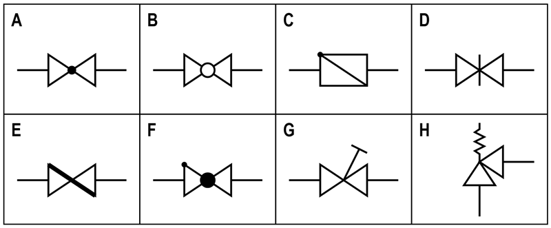
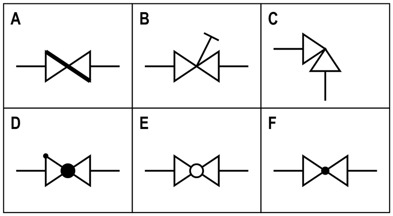

Kupferlegierungen, Armaturen
Heute lernst du: was eine Legierung ist, wo man Rotguss, Messing und Bronze verwendet, welche Armaturen es gibt, wie sie absperren und wie man sie im Plan zeichnet.
So arbeitest du: Lies zuerst den grauen Infokasten. Mach dann die Aufgaben darunter. Die Antworten findest du im Infokasten. Fertig? Tippe bei jeder Aufgabe auf „Prüfen“. Bessere deine Fehler aus.
„Mehr wissen ★★★“: erweiterte Aufgabenstellungen.
Infokasten A: Was ist eine Legierung? (Legierung)
|
Eine Legierung ist ein Metallgemisch. Man macht verschiedene Metalle flüssig und mischt sie. Beim Abkühlen wird das Gemisch fest. Es ist dann ein neues Metall mit anderen Eigenschaften. Warum legiert man? Bestimmte Eigenschaften sollen besser werden, zum Beispiel: • Festigkeit (das Metall hält mehr aus) • Zerspanbarkeit (man kann es gut bohren, drehen und Gewinde schneiden) • Korrosionsbeständigkeit (es rostet bzw. korrodiert nicht so leicht, z. B. im Meerwasser) Bei Rotguss, Messing und Bronze ist Kupfer der Hauptteil. Darum heißen sie Kupferlegierungen. Sie sind fester und härter als reines Kupfer. Gut bleibt: Sie leiten gut und man kann sie löten. Aus Kupferlegierungen macht man z. B. Kugelhähne, Ventile, Fittings und Verteiler. Merke: Eine Legierung ist ein Metallgemisch. Kupfer ist bei Rotguss, Messing und Bronze der Hauptteil. |
Aufgabe 1 ★ leicht – Richtig oder falsch?
Lies Infokasten A. Kreuze an: richtig (R) oder falsch (F).
| Satz | R | F |
|---|---|---|
| Eine Legierung ist ein Metallgemisch. | ||
| Messing ist reines Kupfer. | ||
| Kupferlegierungen sind härter als reines Kupfer. | ||
| Kupferlegierungen kann man nicht löten. |
Warum macht man eine Legierung? Kreuze an.
| Damit das Metall billiger wird. | |
| Damit man es nicht mehr löten muss. | |
| Damit bestimmte Eigenschaften besser werden (z. B. Festigkeit). |
Infokasten B: Rotguss, Messing, Bronze (Kupferlegierungen)
Cu = Kupfer, Zn = Zink, Sn = Zinn. Entzinkung: Das Trinkwasser löst das Zink aus dem Messing heraus. Das Material wird porös (bekommt kleine Löcher) und kann undicht werden. Darum nimmt man Messing im Trinkwasser nicht so oft.
|
Aufgabe 2 ★ leicht – Füll die Tabelle aus
Lies Infokasten B. Füll die Tabelle aus. Schau dabei so wenig wie möglich in den Infokasten.
Diese Antworten gibt es: A Abwasser – B Cu – Sn – C Cu – Zn – D Cu – Zn – Sn – E Heizung und Gas – F Kupfer und Eisen – G Kupfer und Zink – H Kupfer und Zinn – I Kupfer, Zink und Zinn – J Pumpengehäuse – K Trinkwasserleitungen
Tipp den Buchstaben ein. Achtung: 2 Antworten bleiben übrig.
| Was suchst du? | Buchstabe |
|---|---|
| Rotguss: Bestandteile | |
| Messing: Bestandteile | |
| Bronze: Bestandteile | |
| Rotguss: Kurzzeichen | |
| Messing: Kurzzeichen | |
| Bronze: Kurzzeichen | |
| Rotguss: Verwendung | |
| Messing: Verwendung | |
| Bronze: Verwendung |
Aufgabe 3 ★★ mittel – Rotguss oder Messing?
Lies Infokasten B. Ein Kollege will für die Kaltwasserleitung im Bad einen Messing-Fitting nehmen. Was sagst du ihm? Kreuze an.
| Nimm Rotguss. Bei Messing gibt es im Trinkwasser die Gefahr der Entzinkung. | |
| Passt, Messing ist im Trinkwasser am besten. | |
| Nimm Bronze. Messing ist zu weich. |
Infokasten C: Welche Armaturen gibt es? (Einteilung der Armaturen)
|
Eine Armatur ist ein Bauteil in der Leitung (Thema 06). Armaturen macht man meist aus Kupferlegierungen. Man teilt Armaturen in Gruppen ein: Absperr-, Regel-, Sicherheits-, Auslauf- und Messarmaturen.
Merke: Hähne, Ventile, Schieber und Klappen sind Absperrarmaturen. |
Aufgabe 4 ★ leicht – Ordne zu
Lies Infokasten C. Zu welcher Gruppe gehört die Armatur? Kreuze in jeder Zeile 1 Kästchen an.
| Armatur | Absperren | Regeln, Sichern |
|---|---|---|
| Kugelhahn | ||
| Sicherheitsventil | ||
| Schieber | ||
| Druckminderer | ||
| Absperrklappe | ||
| Strangregulierventil |
Infokasten D: Schnell oder langsam zudrehen? (Druckschlag)
|
Im Rohr fließt das Wasser schnell. Sperrt man die Leitung schnell ab, prallt das Wasser gegen die Armatur. Es gibt einen harten Schlag in der Leitung. Das nennt man Druckschlag. Er kann Rohre und Armaturen beschädigen.
Gut zu wissen: In der Praxis gibt es auch im Trinkwasser Kugelhähne, z. B. bei der Hauptabsperrung. Dann dreht man sie langsam zu. Merke: Trinkwasser: langsam schließen. Heizung: Kugelhahn erlaubt. |
Aufgabe 5 ★ leicht – Trinkwasser oder Heizung?
Lies Infokasten D. Wohin passt der Satz? Kreuze in jeder Zeile 1 Kästchen an.
| Satz | Trinkwasser | Heizung |
|---|---|---|
| Das Wasser fließt immer im Kreis. | ||
| Der Druck ist hoch (bis zu 6 bar). | ||
| Hier nimmt man langsam schließende Armaturen. | ||
| Ein schnell schließender Kugelhahn ist erlaubt. |
Was passiert, wenn man eine Trinkwasserleitung mit hohem Druck ganz schnell absperrt? Kreuze an.
| Das Wasser wird wärmer. | |
| Es gibt einen Druckschlag. Er kann Rohre und Armaturen beschädigen. | |
| Nichts, das ist egal. |
Infokasten E: Wie sperrt die Armatur ab? (Absperrarmaturen)
|
In jeder Absperrarmatur ist ein Teil, das die Leitung zumacht. Das nennt man Dichtelement.
Die Spindel ist die Stange, die man beim Auf- und Zudrehen dreht (Thema 06). Drehen: Das Dichtelement dreht sich (Hebel 90°). Heben: Das Dichtelement geht hinauf und hinunter. Man dreht am Handrad mehrmals. Auf dem Ventil zeigt ein Pfeil die Durchflussrichtung. Das Ventil muss so eingebaut werden, dass das Wasser in Pfeilrichtung fließt. Merke: Beim Ventil ist die Durchflussrichtung festgelegt. Auf den Pfeil schauen! |
Aufgabe 6 ★ leicht – Welche Armatur ist das?
Lies Infokasten E. Welche Armatur wird beschrieben? Schreib den Namen in die rechte Spalte.
Diese Wörter gibt es: A Hahn – B Klappe – C Kugel – D Schieber – E Spindel – F Ventil
Tipp den Buchstaben ein. Achtung: 2 Wörter bleiben übrig.
| Beschreibung | Buchstabe |
|---|---|
| Ein Ventilteller wird auf den Ventilsitz gedrückt. | |
| Eine Kugel mit Loch dreht sich um 90°. | |
| Eine Platte (Keil) wird zwischen 2 Dichtflächen gedrückt. | |
| Eine Scheibe dreht sich und drückt gegen die Dichtung. |
Aufgabe 7 ★★ mittel – Durchflussrichtung und Bewegung
Lies Infokasten E. Kreuze in jeder Zeile 2 Kästchen an: 1 bei der Durchflussrichtung und 1 bei der Bewegung vom Dichtelement.
| Armatur | Richtung egal | Richtung fest | dreht sich | hinauf, hinunter |
|---|---|---|---|---|
| Kugelhahn | ||||
| Schrägsitzventil | ||||
| Absperrklappe | ||||
| Schieber | ||||
| Geradsitzventil |
Ein Lehrling baut ein Schrägsitzventil ein. Worauf muss er achten? Kreuze an.
| Auf die Farbe vom Handrad. | |
| Auf nichts, die Richtung ist egal. | |
| Auf den Pfeil am Ventil. Das Wasser muss in Pfeilrichtung fließen. |
Infokasten F: Regeln und schützen (Regel- und Sicherheitsarmaturen)
Merke: Das Sicherheitsventil geht bei zu hohem Druck von selbst auf. |
Aufgabe 8 ★ leicht – Was macht die Armatur?
Lies Infokasten F. Verbinde jede Armatur mit ihrer Aufgabe. Schreib den Buchstaben in die mittlere Spalte.
| Armatur | Buchstabe | Aufgabe |
|---|---|---|
| Strangregulierventil | A lässt das Wasser nur in eine Richtung fließen | |
| Druckminderer | B geht bei zu hohem Druck von selbst auf | |
| Rückschlagklappe | C stellt eine bestimmte Wassermenge ein | |
| Sicherheitsventil | D macht den Druck vom Versorger kleiner |
Infokasten G: Wie zeichnet man die neuen Armaturen? (Sinnbilder)
|
In Thema 06 hast du schon Sinnbilder gezeichnet: Absperrarmatur mit 2 Dreiecken, Schieber, Kugelhahn, Schrägsitzventil, Rückflussverhinderer, Druckminderer. Zur Erinnerung: Schieber = senkrechter Strich in der Mitte, Kugelhahn = offener Kreis, Schrägsitzventil = kein Punkt, aber schräge Spindel mit Griff. Jetzt kommen neue dazu (nach ÖNORM B 2530-2).
 A Geradsitzventil – B Kugelhahn – C Rückschlagklappe – D Schieber – E Absperrklappe – F Rückschlagventil – G Schrägsitzventil – H Sicherheitsventil Merke: Kleiner Punkt = Geradsitzventil. Großer Punkt = Rückschlagventil. Feder = Sicherheitsventil. |
Aufgabe 11 ★★ mittel – Wiederholung: Sinnbilder erkennen
Schau nicht in Infokasten G. Welches Sinnbild ist das? Schreib den Buchstaben in die Tabelle.

| Name | Buchstabe |
|---|---|
| Kugelhahn | |
| Geradsitzventil | |
| Schrägsitzventil | |
| Rückschlagventil | |
| Absperrklappe | |
| Eckventil |
Aufgabe 12 ★★ mittel – Wiederholung: Welche Armatur ist auf dem Foto?
Schau nicht in die Infokästen. Welche Armatur ist auf dem Foto? Tipp den Buchstaben ein. Kontrollier erst danach mit Infokasten E und F.
Diese Armaturen gibt es: A Druckminderer – B Kugelhahn – C Rückschlagventil – D Schrägsitzventil – E Sicherheitsventil
Achtung: 2 bleiben übrig.
| Foto | Buchstabe | |
|---|---|---|
| 1 | ||
| 2 | ||
| 3 |
Mehr wissen ★★★: Wie viel bremst die Armatur? (Druckverlust)
|
Das Wasser muss durch die Armatur fließen. Jede Armatur bremst das Wasser ein bisschen. Dabei geht Druck verloren. Das nennt man Druckverlust.
Merke: Je mehr Umwege das Wasser macht, desto größer ist der Druckverlust. |
Aufgabe 13 ★★★ schwer – Welche Armatur passt?
Lies Infokasten A bis G und „Mehr wissen“. Welche Armatur nimmst du? Tipp den Buchstaben ein.
Diese Armaturen gibt es: A Geradsitzventil – B Kugelhahn – C Rückschlagklappe – D Schrägsitzventil – E Sicherheitsventil – F Strangregulierventil
Achtung: 2 bleiben übrig. Tipp: Bei 2 Armaturen passt mehr als eine. Nimm die mit dem kleineren Druckverlust.
| Situation | Buchstabe |
|---|---|
| Absperrung im Heizungskeller. Der Hausmeister will schnell zudrehen können. | |
| Absperrung in der Trinkwasserleitung. Sie soll langsam schließen. Ein Handrad soll drauf sein, kein Hebel. | |
| Am Heizkessel darf der Druck nie über 3 bar steigen. | |
| Das Wasser darf in der Leitung nicht zurückfließen. |
Aufgabe 14 ★★ mittel – Fachbegriffe
Fachbegriffe sind die Wörter, die man auf der Baustelle verwendet.
Welcher Fachbegriff passt zur Erklärung? Tipp den Buchstaben in das Feld.
Diese Fachbegriffe gibt es: A Absperrarmatur – B Bronze – C Dichtelement – D Druckschlag – E Entzinkung – F Legierung – G Messing – H Rotguss – I Sicherheitsventil – J Spindel – K Strangregulierventil – L Ventilsitz
Achtung: 2 Fachbegriffe bleiben übrig. Tipp: Lies die Infokästen A bis G.
| Erklärung | Buchstabe |
|---|---|
| Ein Metallgemisch. Verschiedene Metalle werden flüssig gemischt. | |
| Kupferlegierung aus Kupfer, Zink und Zinn. Man nimmt sie im Trinkwasser. | |
| Kupferlegierung aus Kupfer und Zink. Für Heizung und Gas. | |
| Kupferlegierung aus Kupfer und Zinn, sehr hart und meerwasserbeständig. | |
| Das Trinkwasser löst das Zink aus dem Messing heraus. | |
| Harter Schlag in der Leitung, wenn man schnell absperrt. | |
| Armatur, die die Leitung zu- und aufmacht (Hahn, Ventil, Schieber, Klappe). | |
| Teil in der Armatur, das die Leitung zumacht (z. B. Kugel, Ventilteller). | |
| Geht bei zu hohem Druck von selbst auf und lässt Wasser hinaus. | |
| Stange in der Armatur, die man beim Auf- und Zudrehen dreht. |
Aufgabe 15 ★★★ schwer – Fachbegriffe auf Englisch
Wie heißt der Fachbegriff auf Englisch? Tipp den Buchstaben vom englischen Wort in das Feld.
Diese Wörter gibt es: A alloy – B ball valve – C brass – D bronze – E check valve – F gate valve – G gunmetal – H pipe – I pressure – J safety valve – K socket – L valve
Achtung: 2 Wörter bleiben übrig.
| Deutsch | Englisch |
|---|---|
| Legierung | |
| Messing | |
| Bronze | |
| Rotguss | |
| Druck | |
| Ventil | |
| Kugelhahn | |
| Schieber | |
| Rückschlagventil | |
| Sicherheitsventil |
Fertig? Tippe bei jeder Aufgabe auf „Prüfen“. Bessere deine Fehler aus.